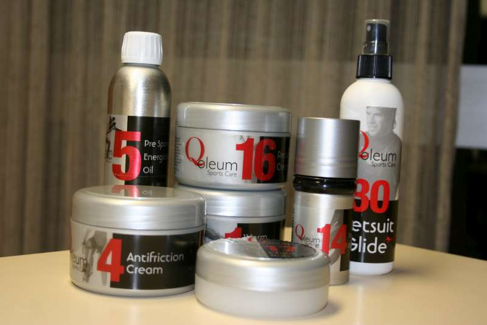
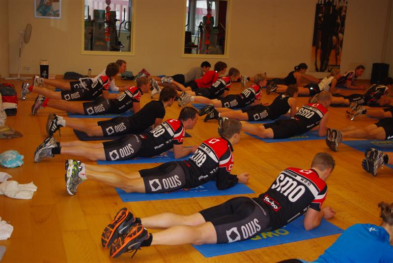
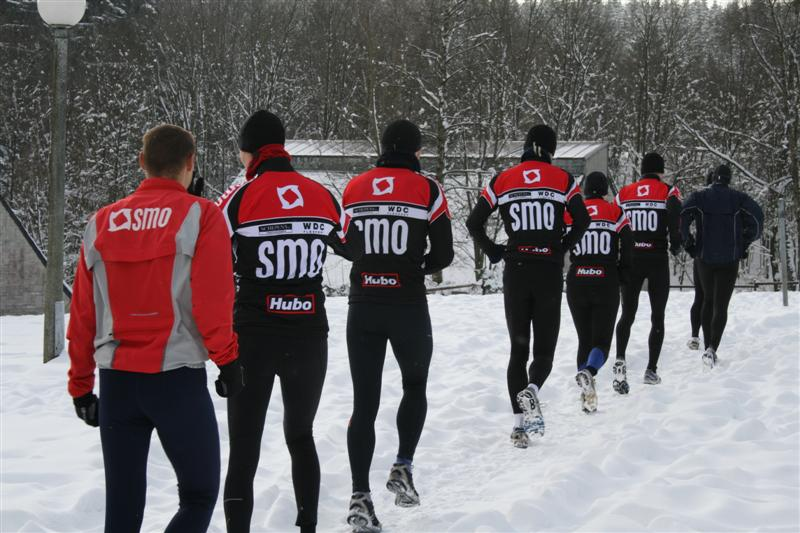
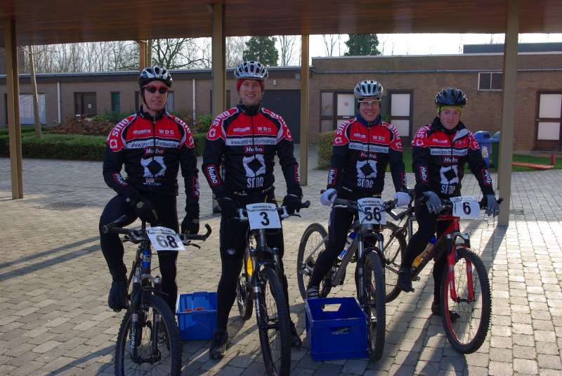
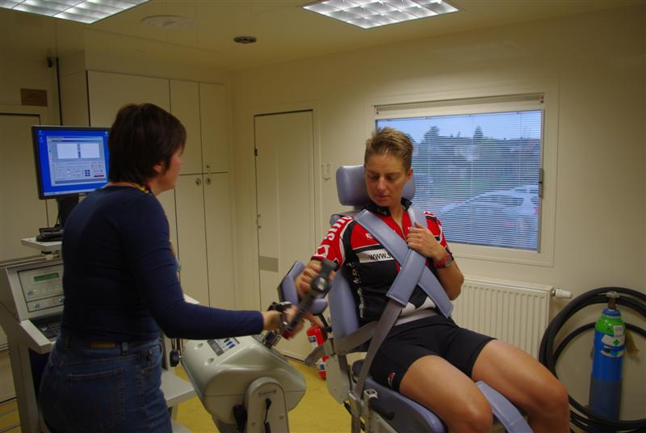

1. Qoleum kennismakingspakket
Je kleden tijdens de koude wintermaanden is niet altijd evident. Zeker bij vriesweer, schrale wind, natte en ijzige temperaturen geraak je snel verkleumd en gaat je goede trainingsgevoel en motivatie snel verloren wanneer je gedurende langere tijd aan de kou wordt blootgesteld. Naast de juiste kledijkeuze is ook de bescherming van je huid en cruciale lichaamsdelen van essentieel belang om plezier aan je trainingen te blijven beleven. Bij temperaturen lager dan -8°C begeef je je best niet meer buiten, want dan is het risico op aandoeningen van de luchtwegen te groot. Zoek dan een alternatieve training in de fitnesszaal of indoorhal.

Een natuurlijke verwarmende zalf met daarboven een extra laagje sportolie ter bescherming van natte koude en beschermende laag doet wonderen. De natuurlijke producten onttrekken geen warmte uit de spieren, maar stimuleren de spierwerking en zorgen voor betere doorbloeding.
Eerst warme zalf inmasseren tot er niets meer zichtbaar is van zalf, dan een beetje pre sports olie bovenzetten, zo hou je de regen weg door de oliefilm die op je huid ligt, water en vuil kunnen zich dan niet vastzetten op je lichaam en je hebt nog eens de stimulerende werking van de olie voor een nog betere doorbloeding !
In zeer slechte omstandigheden kan je niet alleen de benen insmeren maar ook de handen,armen,voeten, zelfs rug en buik. De warmte stoort toch niet tijdens de inspanning en als je kou krijgt, vermindert de prestatie zeer sterk, zodus: smeren!
Via onze sportieve partner krijgen we éénmalig de mogelijkheid om een kennismakingspakket aan te kopen ter waarde van € 65 (winkelwaarde € 110, een korting van ruim 35%). Het pakket bestaat uit de volgende artikelen: Warm Embrocation, Hot Embrocation, Pre Sports Energizing Oil, After Sports Wash, Lippenbalse, Recuperation cream, Chest Rub, Fit feet, Antifriction cream, Wetsuit Glide. Een volledig gamma om de zomer en winter op een aangename manier door te komen. Indien jullie een pakket wensen aan te komen graag melden tav.
info(at)smo-triatlonteam.be voor 15 februari 2010.
2. BlessurepreventieIn de opbouw naar het nieuwe seizoen is het doel als atleet voornamelijk gericht op betere prestaties. De juiste training op het juiste moment is natuurlijk ongelooflijk belangrijk, maar heel wat mensen vergeten dat blessurepreventie ook een zeer belangrijk aspect hierin is.

Het versterken van de sterke punten en daarnaast het bijschaven van de zwakke punten: dit is zo ongeveer een open deur intrappen. Aan de andere kant: hoeveel atleten doen effectief iets aan hun mobiliteit/ lenigheid? Aan hun (romp)stabilisatie? Aan een eventueel spieronevenwicht? Aan specifieke spierversterkende oefeningen? Aan relaxatie oefeningen? Aan excentrisch spierwerk? En zo kunnen we nog wel even doorgaan.
Uiteraard is rompstabilisatie hierin zeer belangrijk. In een volgende nieuwsbrief willen we hier dieper op ingaan, dit met ook wat didactisch materiaal.
Maar naast rompstabilisatie en de buikspieren, zijn er nog een heel aantal andere factoren die bijdragen tot blessurepreventie.
Naast een aantal algemene zaken (een aantal zaken waar eigenlijk elke atleet rekening mee zou moeten houden), zijn er ook een aantal individuele aspecten.
Eerst een overzichtje van enkele algemene zaken:
Ik wil hier wel duidelijk bij zeggen dat dit een 'ideale omschrijving' is. Dit wil dus niet zeggen dat ik zelf ook altijd in alle zaken slaag, maar ernaar streven is wel een mooi uitgangspunt.

Variatie: Zowel voor de verbetering in conditie en prestatie als naar blessurepreventie toe is variatie enorm belangrijk. Variatie in verschillende domeinen kan ervoor zorgen dat overbelasting kan vermeden worden- Variatie in ondergrond: lopen in het bos, op het strand, op de verharde weg, op grindpaadjes,…
- Variatie in intensiteit: door op training zowel extensief (blijft uiteraard het belangrijkste) af te wisselen met snellere stukken, kan het lichaam deze belastingen ook beter verdragen en zal bij maximale inspanningen (wedstrijden,…) het lichaam deze inspanningen ook kunnen opvangen
- Variatie in loopschoenen: wanneer je veel kilometers doet, is het aan te raden om 2 paar loopschoenen af te wisselen
- Stretching: misschien moeten we het hier vooral hebben over algemene souplesse en mobiliteit.
- Ontspanning, relaxatie, yoga, ademhalingsoefeningen. In de USA zijn ze hier ongelooflijk mee bezig. Feit is dat vele atleten veel trainen, maar zeer gespannen zijn in de spieren. Wat meer ontspanning kan dus voor velen een werkpuntje zijn!
- Souplesse en kracht van de voet. Ook dit is een onderschat puntje. Als manueel therapeut kom ik regelmatig in contact met atleten van wie de voet volledig ‘vast’ zit. De voet bestaat uit verschillende botjes en dus ook verschillende gewrichten. Wanneer deze soepel bewegen, worden de krachten op onze voeten (bij het landen bijvoorbeeld) mooi verdeeld over de verschillende gewrichtjes. Wanneer deze botjes echter als één geheel werken, worden de krachten minder opgevangen, met als gevolg dat er een grotere belasting is op het scheenbeen en de knie, met bijvoorbeeld scheenbeenvliesontsteking (en later stressfractuur) als gevolg. Het regelmatig mobiliseren van de voeten is dus belangrijk. Dit kan door zelf met je voeten te ‘spelen’ maar ook door bijvoorbeeld met een tennisbal onder je voetgewelf te rollen. Een andere optie is het opnemen van een kous met je tenen. Deze krachttraining is, net als bijvoorbeeld regelmatig op blote voeten lopen (vb op het strand) ook bevorderlijk. Uiteraard is een regelmatig bezoek aan manueel therapeut, osteopaat, chiropractor,… ook aan te raden.

- Rug: dit is voor vele atleten een probleem. Sommigen hebben er effectief last van, anderen beseffen niet dat dit een onderliggend probleem is. Bij herhaaldelijke zware trainingen, is het mogelijk dat het evenwicht in de rug en nek wat verstoord is. Regelmatig laten controleren door een MT (zie hierboven), is een zeer interessante tip!
- Tandarts. Een puntje die vaak vergeten wordt, maar het is algemeen geweten dat een ontsteking in de tanden ook gevolgen kan hebben over de rest van het lichaam. Een regelmatige controle hier is dus ook op zijn plaats (1 x / jaar)
- Bloedonderzoek: 1 x in de 3-4 maanden is het interessant om je bloed te laten trekken. Dit liefst bij een sportdokter, die kan immers inschatten met wat je bezig bent.
- Fietspositie: het is belangrijk dat je juist op de fiets zit. Aërodynamica is natuurlijk belangrijk, maar het moet ook nog comfortabel zijn. Daarnaast moet rekening gehouden worden met je lichaamsmaten. Voor schouders/nek en rug is jouw ideale positie enorm belangrijk. Er zijn gekwalificeerde specialisten op dit gebied.
- Voeding: Een goed uitgebalanceerde voeding zorgt niet alleen voor een betere prestaties (door minder vetmassa) maar zorgt ook voor een betere recuperatie en dus ook voor minder blessures.
###########
Dan even dieper ingaan op een aantal individuele aspecten:
Hierbij is het codewoord screening. Het is immers zo dat iedere atleet wel een zwakke plek heeft, waardoor een bepaald type blessures nu eenmaal sneller voorkomt. Naast de specifieke trainingsaanpak (rustige opbouw kilometers en dergelijke) is het belangrijk om na te gaan wat je ‘zwakke plek’ is. Ook het SMO-topteam werd deze winter uitgebreid getest op fysisch, energetisch en mentaal vlak om zo concreet met enkele actiepunten te komen voor de volgende opbouwperiode. Dit houdt onze atleten scherp en gefocused op hun lichaam en prestaties.
Hierbij enkele mogelijkheden:
- Rug: zie hierboven

- Algemene souplesse
- Verkorte spieren
- Neiging tot snel hebben van krampen
-
- Spieronevenwicht (dit is na te gaan door een isokinetische test te doen. Bij deze test wordt de verhouding vastgelegd tussen 2 spieren, vb quadriceps en hamstrings. Een onevenwicht kan bijvoorbeeld leiden tot knieklachten)
- Terug kerende tekorten in het bloed
- Verkeerde techniek (vb schouder overbelasting door verkeerde zwemtechniek)
- …
Dit zijn allemaal zaken die je kan laten testen bij een manuele therapeut, osteopaat, chiropractor,…
Vaak is het controleren van bekken en rug al een eerste stap. Goed schoeisel en een goede fietspositie zorgen dan voor een volgende stap. Hoe meer je met je sport bezig bent, hoe meer details uiteraard het verschil gaan maken!
SMO-Teamcoach
Tim De Vilder
www.timecoach.be